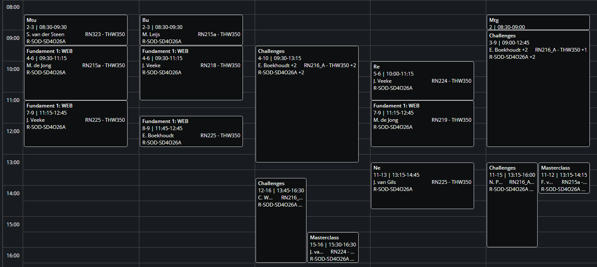

Bij Native leer je programmeren en applicaties ontwikkelen.
Bij Web leer je websites maken met HTML, CSS en JavaScript.
DIV staat voor digitale vaardigheden. Met DIGIT-mbo leer je op een praktische manier werken met verschillende digitale programma's en vaardigheden.
Je leert Engelse woorden en vaardigheden die je kunt gebruiken tijdens je opleiding en later in de IT.
Je werkt aan je Nederlandse taalvaardigheid, communicatie en schrijfvaardigheid.
Bij PRO werk je aan professionele vaardigheden en leer je hoe je jezelf ontwikkelt richting het werkveld.
Bij PRA pas je wat je hebt geleerd toe in praktische opdrachten en projecten.
In Codelab oefen je met programmeren en werk je zelfstandig aan code en opdrachten.
Een eerstejaarsstudent heeft verschillende lessen per week. Je werkt zowel zelfstandig als samen met andere studenten.

Na de opleiding Software Developer kun je direct gaan werken. Je kunt er ook voor kiezen om verder te studeren en een hbo-opleiding Software Development te volgen.
Tijdens de opleiding werk je veel aan projecten. Je leert samenwerken en maakt opdrachten die lijken alsof je het in het echte praktijk doet. ok in de later jaren in je opleiding doe je een stageloop
Het schooljaar is verdeeld in verschillende blokken. In ieder blok werk je aan verschillende vakken en projecten.
Klik hier voor meer informatie over de blokkenNaast de lessen werk je thuis aan opdrachten en projecten. Een goede planning helpt om alles op tijd af te krijgen.